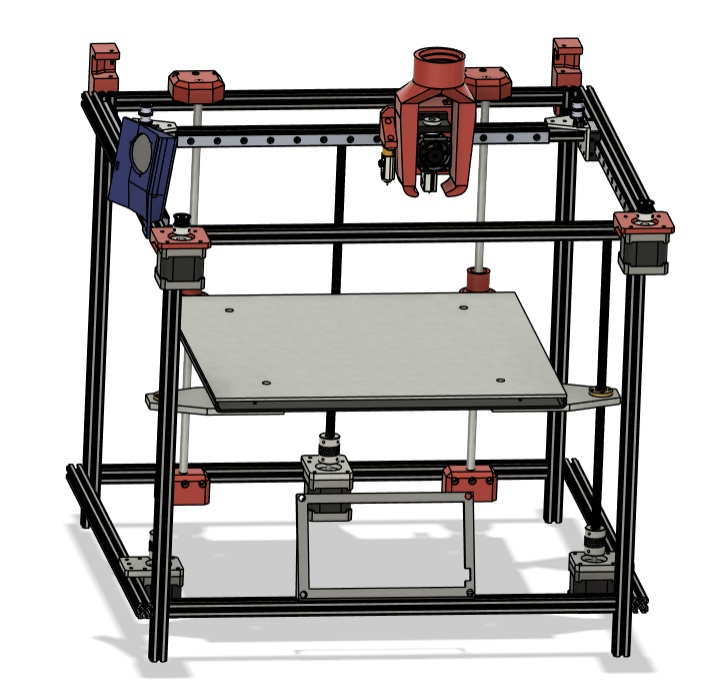
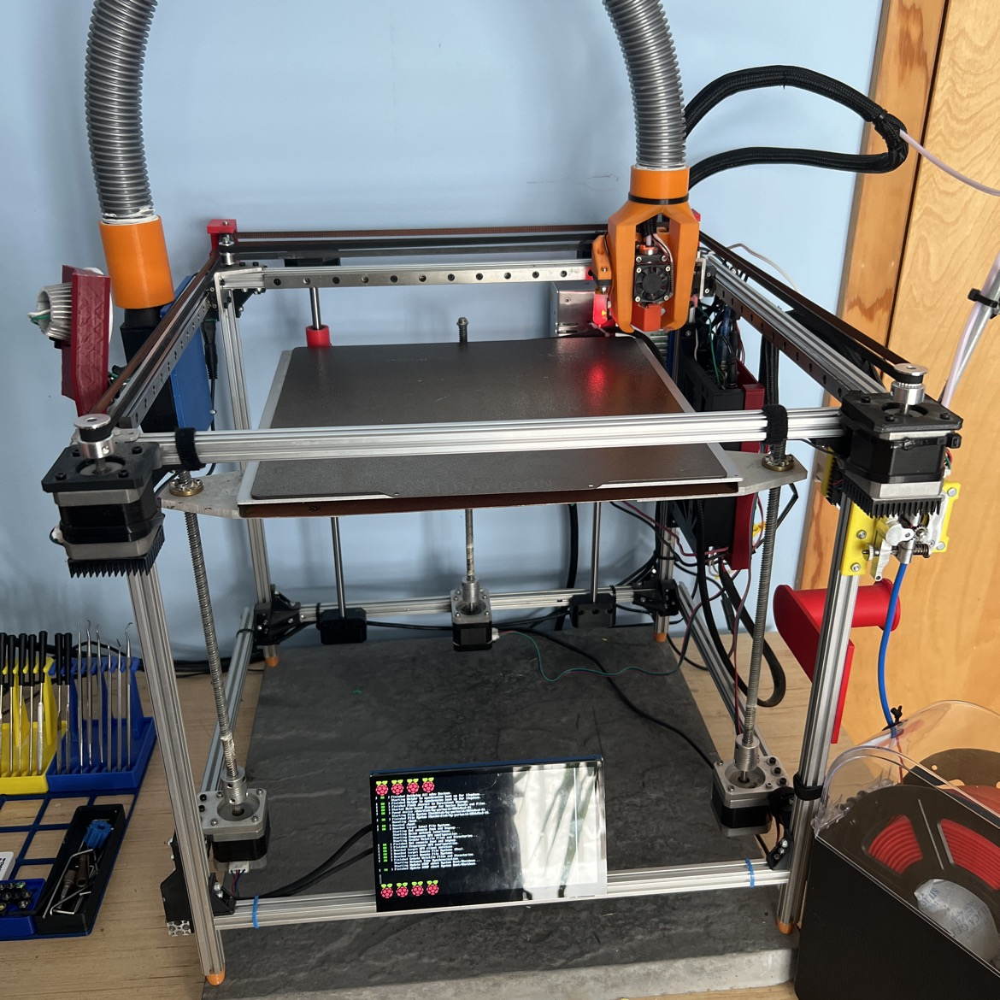

3D Printer Design and Build
Designed and built a coreXY 3D printer running on Klipper firmware that rivals the performance of top-level consumer models at less than half the price. This printer serves as a customizable platform for testing 3D printer performance improvements.
View Details →
I implemented an ADXL345 accelerometer-based input shaping algorithm which avoids resonance peaks to reduce print artifacts and improve surface finish at high speeds. The printer platform was also useful to analyze power consumption and thermal performance of the stepper drivers under various print loads, optimizing cooling to maintain consistent performance during long prints. To support high speed printer development, I designed a low cost CPAP cooling assembly using custom 3D printed parts to provide superior part cooling performance at high print speeds (orange 3D prints and gray vacuum hose in the image).

